ECG Blog #203 (ECG MP-20,21) — TRỤC & Blốc phân nhánh (LAHB-LPHB)
LƯU Ý (ngày 12 tháng 3 năm 2021): Tôi đã quyết định định kỳ cập nhật và bổ sung một số chủ đề điện tâm đồ cốt lõi mà tôi đã trình bày trước đây. Vì vậy, ECG Blog hôm nay nhìn lại một lần nữa một cách tiếp cận dễ dùng đối với Trục & Blốc phân nhánh — nhấn mạnh vào ứng dụng lâm sàng.
- Tôi đã biên tập và gộp phần ôn tập bằng Video của 2 chủ đề này.
- Phần dưới đây là ôn tập dạng văn bản — kèm ĐƯỜNG LINK tới các ví dụ từ những bài blog liên quan.
- Tôi sẽ trình bày: CÁCH chẩn đoán các blốc phân nhánh trong chưa tới 5 giây!
====================================

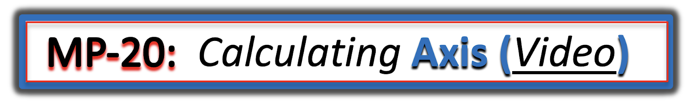
Bài 1 hôm nay: ECG Media Pearl #20 (Video 14:30 phút) — Ôn tập một cách tiếp cận dễ dùng để tính trục.
====================================

Bài 2 hôm nay: ECG Media Pearl #21 (Video 12:00 phút) — Ôn tập một cách tiếp cận dễ dùng đối với các blốc phân nhánh (LAHB/LPHB) và blốc hai phân nhánh (RBBB/LAHB; RBBB/LPHB) — giúp chẩn đoán chính xác chỉ trong vài giây!
------------------------------------------------------

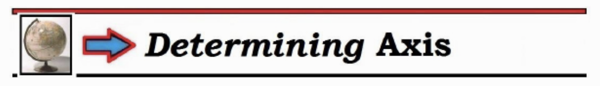
------------------------------------------------------
Như đã trình bày trong ECG Blog #93 — thông số thứ 4 trong Cách tiếp cận hệ thống của chúng tôi khi đọc điện tâm đồ (sau khi đánh giá tần số — nhịp — các khoảng) — là xác định TRỤC. “Tin tốt” — là việc ước lượng chính xác trục trên mặt phẳng trán rất dễ thực hiện và có thể làm không quá vài giây.
- Điểm CHÍNH: Để có cái nhìn đúng mức — tốt nhất là không nên quá bận tâm về trục. Thông tin lâm sàng mà trục cung cấp là hạn chế — và thường chỉ cần ước lượng trục là đủ. Hiếm khi cần chính xác hơn mức sai lệch khoảng 30 độ so với trục thực.
ĐỊNH NGHĨA: Trục “điện” là gì?
Vậy thuật ngữ “trục” trong đọc điện tâm đồ có nghĩa là gì?
- Trục QRS trung bình — có thể định nghĩa là hướng trung bình của hoạt động điện của tim trên mặt phẳng trán. Thực ra hoạt động điện của tim lan truyền theo 3 chiều — bao gồm các mặt phẳng nằm ngang — thẳng đứng — và cắt ngang (Hình-1). “Trục” mà chúng ta quan tâm khi đánh giá thông số thứ 4 này trong cách tiếp cận hệ thống của chúng tôi là trục mặt phẳng trán.
- Hoạt động điện trên mặt phẳng cắt ngang — được đánh giá bằng 6 chuyển đạo ngực (hay chuyển đạo trước tim) (Hình-1). Tuy những dấu hiệu như tăng tiến sóng R có phù hợp hay không là thành phần quan trọng của việc đọc điện tâm đồ — các đặc điểm đó không tham gia vào đánh giá “trục”.
- Thay vào đó — chính 3 chuyển đạo chi chuẩn và 3 chuyển đạo tăng thế tạo nên hệ thống chuyển đạo sáu trục (hexaxial) — mới là các chuyển đạo nhìn hoạt động điện của tim trên mặt phẳng trán.
- LƯU Ý: Thường chỉ cần chú ý tới 3 trong 6 chuyển đạo sáu trục (chuyển đạo I, II và aVF) là đủ để biết những gì cần biết về trục.

Nguyên lý nền tảng: 3 Định luật của Điện tâm đồ học
Nguyên lý xác định trục mặt phẳng trán dựa trên 3 định luật của điện tâm đồ học (trình bày ở Hình-2).

3 Định luật của Điện tâm đồ học được trình bày dạng sơ đồ ở Hình-2 minh họa những điều sau:
- Định luật #1: — một sóng hoạt động điện di chuyển về phía một điện cực ghi sẽ tạo ra một sóng dương trên điện tâm đồ (Ô A ở Hình-2).
- Định luật #2: — một sóng hoạt động điện di chuyển ra xa khỏi một điện cực ghi sẽ tạo ra một sóng âm trên điện tâm đồ (Ô B).
- Định luật #3: — NẾU điện cực ghi được đặt vuông góc với (tức là lệch 90 độ so với) hướng của sóng khử cực — thì một phức bộ đẳng điện hay "đẳng pha" (tức là một phức bộ QRS có phần lên và phần xuống bằng nhau) — sẽ được ghi trên điện tâm đồ (Ô C).
Lâm sàng
LƯU Ý: Lý do ước lượng trục dễ dàng — là nhờ 2 tiền đề sau đây, được suy ra từ 3 định luật của điện tâm đồ học:
- Tiền đề #1: Trục sẽ gần nhất với chuyển đạo mặt phẳng trán có sóng QRS “thực” dương nhất.
- Tiền đề #2: Trục sẽ vuông góc với (tức là — lệch khoảng 90 độ so với) bất kỳ chuyển đạo chi nào có phức bộ QRS đẳng điện (tương ứng với Ô C ở Hình-2).
ĐỊNH NGHĨA: Sóng QRS “thực” là gì?
Phần lớn trường hợp, phức bộ QRS sẽ không hoàn toàn dương hay hoàn toàn âm. Thay vào đó — phức bộ “QRS” thường là tổ hợp của các sóng dương (sóng R và R’) và các sóng âm (sóng Q và S).
- Để ước lượng trục — chúng ta cần thành thạo việc xác định sóng QRS “thực”. Đây đơn giản là lượng tương đối của phần dương so với phần âm trong sóng QRS. Một hình vẽ sẽ làm rõ khái niệm này (Hình-3).

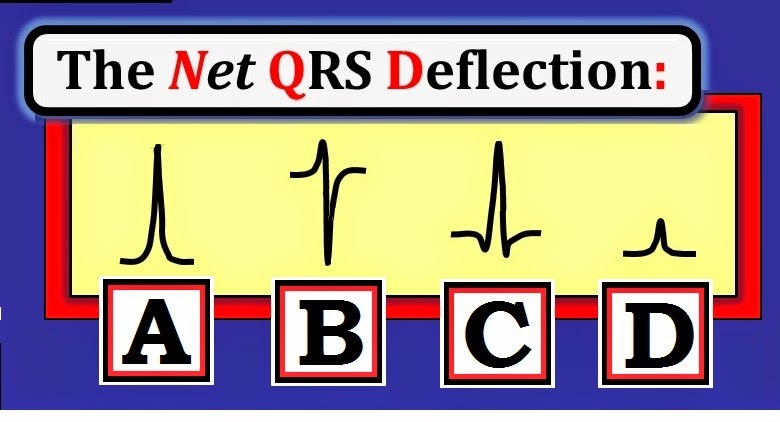
Điểm CHÍNH: Không cần đếm số ô nhỏ của từng dạng sóng trong từng phức bộ để xác định sóng “thực” tương đối. Đó là lý do chúng tôi cố ý bỏ lưới điện tâm đồ ở Hình-3.
- Như chúng ta sẽ thấy ngay sau đây — xác định trục phải là một phép tính nhanh, thực hiện dễ dàng. Không nên mất quá 1 giây liếc nhìn Ô B ở Hình-3 để nhận ra sóng “thực” là âm — hoặc sóng “thực” ở Ô C là dương.
- Điểm nâng cao: Về mặt kỹ thuật — chính “diện tích dưới đường cong” mới được dùng để xác định sóng QRS “thực”. Ví dụ — sóng s ở Ô C của Hình-3 rất hẹp — nên diện tích của sóng âm này rất nhỏ. Dù vậy — bạn không cần bận tâm về diện tích! Xác định trục phải là một ước lượng nhanh mà bạn làm thật nhanh bằng mắt mà không phải đo độ rộng hay chiều cao của các sóng.
Xác định TRỤC: Cách tiếp cận theo góc phần tư (Quadrant Approach)
Với các nguyên lý trên — chúng ta đã sẵn sàng xác định trục. Cách ước lượng nhanh trục dễ nhất là dùng cách tiếp cận theo góc phần tư, định vị trục vào một trong bốn phân đoạn 90 độ. Như trình bày ở Hình-4 — chỉ cần 2 chuyển đạo để xác định góc phần tư chứa trục. 2 chuyển đạo đó là chuyển đạo I (ở 0 độ) — và chuyển đạo aVF (ở +90 độ):
- Trục bình thường — được định nghĩa là trong khoảng 0 đến +90 độ.
- LAD (Left Axis Deviation — trục lệch trái) — nằm trong khoảng -1 đến -90 độ.
- RAD (Right Axis Deviation — trục lệch phải) — nằm trong khoảng +91 đến +180 độ.
- Trục không xác định — nằm trong khoảng +180 đến +270 độ.
Lâm sàng
LƯU Ý: Tuy theo cách tiếp cận góc phần tư, chúng ta mô tả trục +95 độ là “RAD” và trục -10 độ là “LAD” — cần nhấn mạnh rằng những mức “lệch trục” tối thiểu này không có ý nghĩa lâm sàng.
- Tất cả những gì chúng ta làm chỉ là ước lượng gần đúng.
- Về lâm sàng — hiếm khi cần tính trục chính xác. Thường chỉ cần xác định góc phần tư chứa trục là đủ (Hình-4).

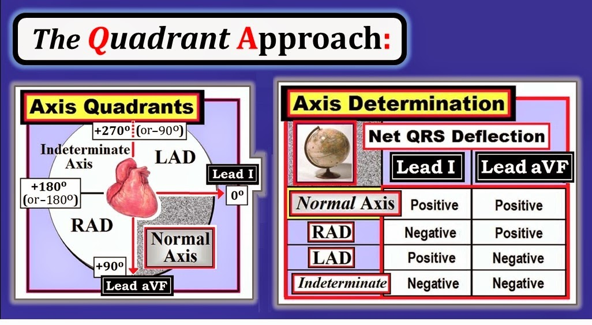
Áp dụng cách tiếp cận theo góc phần tư (Ví dụ A)
Xác định góc phần tư chứa trục rất dễ — và chỉ nên mất chưa tới 5 giây. Chỉ cần dùng bảng ở Hình-4. Chỉ cần luyện tập một chút — bạn sẽ thấy mình không còn cần tra bảng này nữa.
- LƯU Ý: Theo định nghĩa, trục sẽ “bình thường” (tức là trong khoảng 0 đến +90 độ) — NẾU sóng QRS “thực” dương ở cả chuyển đạo I và chuyển đạo aVF.
- Nhưng, NẾU hoặc chuyển đạo I hoặc chuyển đạo aVF không có sóng dương “thực” — thì sẽ có “lệch” trục sang một trong 3 góc phần tư còn lại (hoặc RAD, LAD hoặc trục không xác định).
Ví dụ A: Hãy xem ví dụ lâm sàng ở Hình-5. Xác định góc phần tư chứa trục. Hãy thử xác định số độ xấp xỉ của trục.
- LƯU Ý: Vì chỉ cần 2 chuyển đạo để xác định góc phần tư của trục — đó là tất cả những gì chúng tôi đưa ra trong ví dụ này và trong các ví dụ sơ đồ tiếp theo.

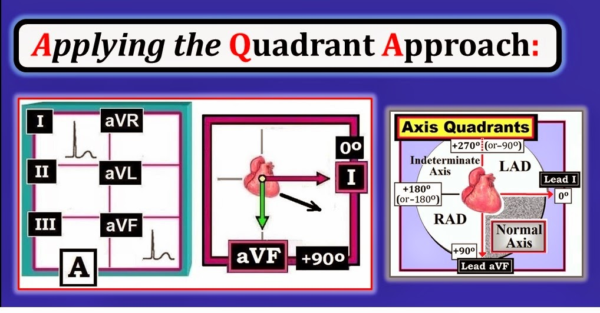
TRẢ LỜI cho Ví dụ A: Trục bình thường (tức là trong khoảng 0 đến +90 độ). Chúng ta biết điều này ngay lập tức — vì sóng QRS “thực” ở cả chuyển đạo I và chuyển đạo aVF trong Hình-5 hiển nhiên là dương (xem bảng ở Hình-4).
- Để dễ hình dung trục nằm ở đâu — chúng tôi vẽ sơ đồ các mũi tên màu lên hình phác góc phần tư của trục ở Hình-5, biểu thị chuyển đạo I (ở 0 độ) và chuyển đạo aVF (ở +90 độ). Mũi tên đen thể hiện ước lượng của chúng tôi về trục tổng thể.
- Lưu ý rằng phức bộ QRS ở Hình-5 hoàn toàn dương ở cả chuyển đạo I và chuyển đạo aVF. NẾU sóng R cao bằng nhau ở 2 chuyển đạo này — thì trục sẽ nằm ở giữa hai chuyển đạo (tức là khoảng +45 độ).
- Vì sóng R ở chuyển đạo I trong Hình-5 có vẻ hơi cao hơn sóng R ở chuyển đạo aVF (mũi tên đỏ so với mũi tên xanh lá) — chúng tôi ước lượng trục nằm trong khoảng +30 đến 40 độ (mũi tên đen trong hình).
- Về lâm sàng — có lẽ chỉ cần nói trục ở Hình-5 là “bình thường” là đủ.
TỰ KIỂM TRA (Ví dụ B): Trục là bao nhiêu?
Xác định góc phần tư của trục ở Ví dụ B (ở Hình-6).
- Trục có bình thường không? Ước lượng số độ.

TRẢ LỜI cho Ví dụ B: Trục ở Hình-6 một lần nữa bình thường (tức là trong khoảng 0 đến +90 độ) — vì QRS hoàn toàn dương ở cả chuyển đạo I và chuyển đạo aVF.
- Vì sóng QRS ở chuyển đạo aVF rõ ràng dương hơn — trục nằm gần aVF hơn (khoảng +60-75 độ).
- Về lâm sàng — chỉ cần nói trục là “bình thường” là đủ.
- Hãy nhớ — tất cả những gì bạn làm chỉ là ước lượng gần đúng! Việc tính trục không cần chính xác — miễn là ước lượng của bạn sai lệch không quá 20 đến 30 độ so với trục thực.
TỰ KIỂM TRA (Ví dụ C): Trục là bao nhiêu?
Xác định góc phần tư của trục ở Ví dụ C (ở Hình-7).
- Trục có bình thường không? Ước lượng số độ.

TRẢ LỜI cho Ví dụ C: Trục ở Hình-7 cũng bình thường (tức là trong khoảng 0 đến +90 độ). Chúng ta biết điều này ngay lập tức — vì phức bộ QRS hoàn toàn dương ở cả chuyển đạo I và chuyển đạo aVF.
- Vì sóng R ở chuyển đạo I dương hơn nhiều so với sóng R ở chuyển đạo aVF (mũi tên đỏ so với mũi tên xanh lá) — chúng tôi ước lượng trục nằm trong khoảng +10-30 độ.
TỰ KIỂM TRA (Ví dụ D): Trục là bao nhiêu?
Xác định góc phần tư của trục ở Ví dụ D (ở Hình-8).
- Trục có bình thường không? Ước lượng số độ.

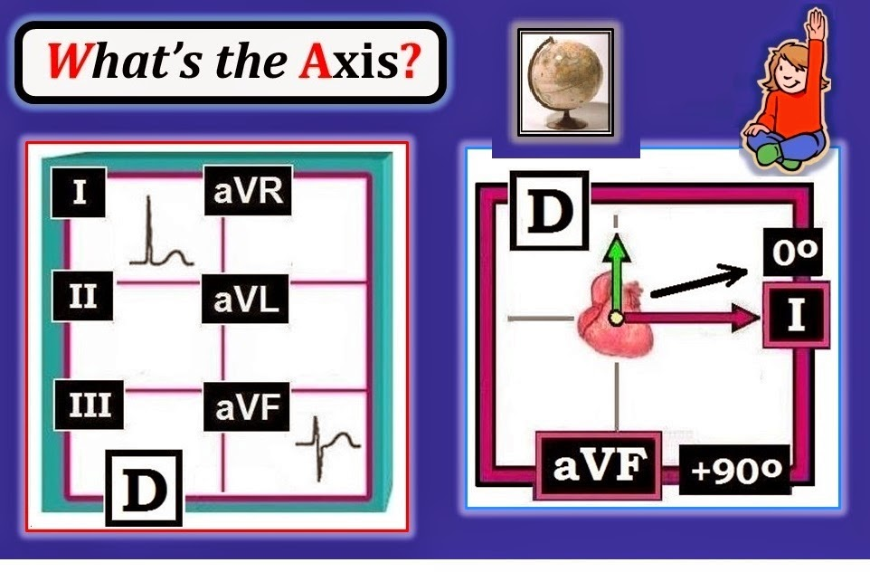
TRẢ LỜI cho Ví dụ D: Trục ở Hình-8 không “bình thường”. Chúng tôi nói vậy vì sóng QRS “thực” âm nhiều hơn dương ở một trong 2 chuyển đạo then chốt dùng để xác định trục.
- Cụ thể — phức bộ RS ở chuyển đạo aVF có sóng S âm hơn so với chiều cao của sóng R ở chuyển đạo này. Điều này đặt trục vào nửa trên (mũi tên xanh lá trong Hình-8).
- Mặt khác — phức bộ QRS ở chuyển đạo I hoàn toàn dương, với sóng R tương đối cao. Điều này đặt trục vào nửa trái (mũi tên đỏ).
- Sự hiện diện của một hướng QRS “thực” dương ở chuyển đạo I cùng với một hướng QRS “thực” âm ở chuyển đạo aVF — xác định trục là LAD (trục lệch trái – Left Axis Deviation). Dù vậy — sóng S ở chuyển đạo aVF không sâu hơn nhiều so với chiều cao của sóng R. Vì vậy chúng tôi ước lượng mức LAD tương đối nhỏ (tức trục nằm trong khoảng -10 đến -20 độ).
- Về lâm sàng — Khi mức LAD nặng (tức là âm hơn rõ rệt so với trong Hình-8) — điều này có thể chỉ ra một rối loạn dẫn truyền gọi là LAHB (blốc phân nhánh trái trước – Left Anterior HemiBlock). Lúc này — chỉ cần nhận ra là có LAD. (Chúng tôi sẽ bàn về LAHB ở phần dưới, bắt đầu từ Hình-11).
===============================
LƯU Ý: “Cái hay” của Cách tiếp cận theo góc phần tư — là bạn có thể biết chỉ trong vài giây LIỆU trục có bình thường hay không.
- NẾU hướng QRS “thực” không dương ở cả hai chuyển đạo I và aVF — thì góc phần tư của trục là không bình thường!
===============================
TỰ KIỂM TRA (Ví dụ E): Trục là bao nhiêu?
Hãy xác định góc phần tư của trục cho Ví dụ E (trong Hình-9).
- Trục có bình thường không? Ước lượng số độ.

TRẢ LỜI cho Ví dụ E: Trục trong Hình-8 không “bình thường” — vì hướng QRS “thực” âm nhiều hơn dương ở một trong 2 chuyển đạo then chốt.
- Cụ thể — phức bộ RS ở chuyển đạo I có sóng S âm hơn so với chiều cao của sóng R ở chuyển đạo này. Điều này đặt trục vào nửa phải (mũi tên đỏ).
- Mặt khác — phức bộ QRS ở chuyển đạo aVF có hướng “thực” dương, với sóng R rõ ràng cao hơn độ sâu của sóng s ở chuyển đạo này. Điều này đặt trục vào nửa dưới (mũi tên xanh lá).
- Sự hiện diện của một hướng QRS “thực” âm ở chuyển đạo I cùng với một hướng QRS “thực” dương ở chuyển đạo aVF — xác định trục là RAD (trục lệch phải – Right Axis Deviation). Chúng tôi ước lượng trục nằm trong khoảng +100 đến +120 độ).
- Về lâm sàng — RAD ở mức độ này thường gặp nhất trong bệnh phổi và/hoặc thất phải lớn (Để biết thêm về RVH — Xem Hình-16).
TỰ KIỂM TRA (Ví dụ F): Trục là bao nhiêu?
Hãy xác định góc phần tư của trục cho Ví dụ F (trong Hình-10).
- Trục có bình thường không? Ước lượng số độ.

TRẢ LỜI cho Ví dụ F: Trục trong Hình-10 không “bình thường”. Chúng ta biết điều này — vì hướng QRS “thực” âm ở ít nhất một trong 2 chuyển đạo then chốt dùng để xác định trục.
- Thực ra — hướng QRS “thực” âm ở cả hai chuyển đạo I và aVF. Điều này đặt trục vào nửa phải và nửa trên (mũi tên đỏ và xanh lá).
- Theo Hình-4 — sự hiện diện của hướng QRS “thực” âm ở cả hai chuyển đạo I và aVF xác định trục là “không xác định” (tức là nằm ở góc phần tư trên bên phải).
- LƯU Ý: Không cần cố ước lượng số độ khi trục “không xác định”. Như chính tên gọi đã hàm ý — hầu như không thể “xác định” được số độ cụ thể của một trục không xác định.
- Về lâm sàng — Bệnh nhân COPD (bệnh phổi tắc nghẽn mạn tính – Chronic Obstructive Pulmonary Disease) dễ có trục không xác định (do khoang thành ngực lớn, khí phế thũng ở bệnh nhân COPD).
ỨNG DỤNG LÂM SÀNG của việc XÁC ĐỊNH TRỤC
Hãy áp dụng những gì đã học để xác định trục cho điện tâm đồ 12 chuyển đạo trong Hình-11. Trục có bình thường không?

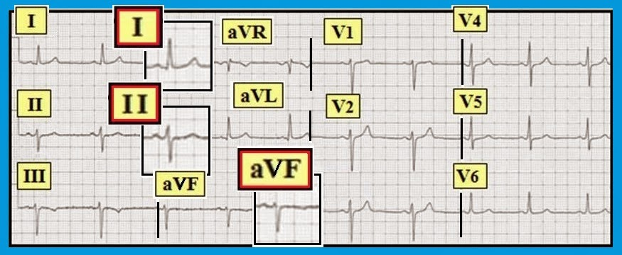
TRẢ LỜI cho Hình-11: Tuy ở đây có 12 chuyển đạo — nhưng chỉ cần 2 trong số đó (tức là chuyển đạo I và chuyển đạo aVF) để xác định góc phần tư của trục. Vì hướng QRS “thực” ở một trong 2 chuyển đạo này rõ ràng âm — chúng ta biết chỉ trong nháy mắt rằng trục không “bình thường”.
- Thực ra, hướng QRS ở chuyển đạo aVF âm gần như hoàn toàn. Điều này cho biết có LAD (trục lệch trái – Left Axis Deviation) rõ rệt — dẫn chúng ta đến phần bàn về các blốc phân nhánh ...
- LƯU Ý: Sau khi giới thiệu các blốc phân nhánh — chúng tôi sẽ kết thúc bài blog này bằng vài nhận xét thêm về Ứng dụng lâm sàng của việc xác định trục.

------------------------------------------------------

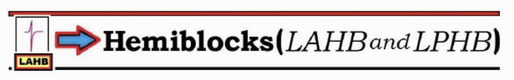
------------------------------------------------------
BLỐC PHÂN NHÁNH: Hệ thống Dẫn truyền Thất
Chúng tôi minh họa hệ thống dẫn truyền thất trong Hình-12. Lưu ý rằng sau nút AV và bó His — hệ thống dẫn truyền thất chia thành 3 bó dẫn truyền chính. Đó là: i) Nhánh phải mảnh; ii) Phân nhánh trái trước tương đối mảnh, xuất phát từ đoạn thân chung nhánh trái ngắn; và, iii) Phân nhánh sau dày hơn và trải rộng hơn nhiều, là nhánh còn lại xuất phát từ đoạn thân chung nhánh trái ngắn.
- Mất dẫn truyền ở nhánh phải gây ra RBBB (blốc nhánh phải – Right Bundle Branch Block).
- Mất dẫn truyền ở thân chung nhánh trái gây ra LBBB (blốc nhánh trái – Left Bundle Branch Block).
- Mất dẫn truyền ở một trong hai phân nhánh — gây ra blốc phân nhánh (trước hoặc sau, tùy phân nhánh nào bị mất dẫn truyền).
- LƯU Ý: LBBB cũng có thể xảy ra do mất dẫn truyền ở vị trí xa hơn trong hệ thống dẫn truyền NẾU có blốc ở cả phân nhánh trước lẫn phân nhánh sau.

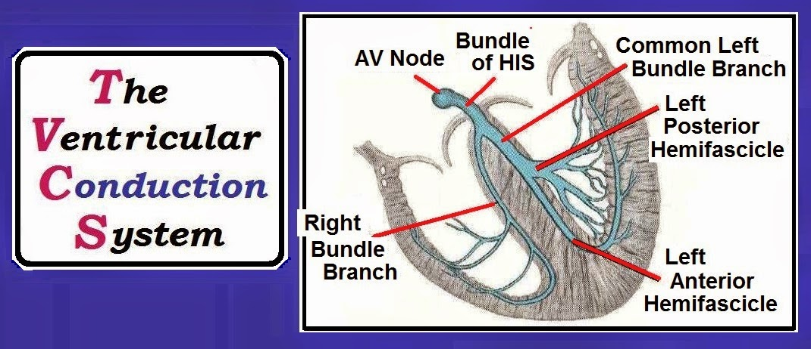
Chẩn đoán Nhanh các BLỐC PHÂN NHÁNH (LAHB & LPHB)
Điều quan trọng là cần hiểu rằng hình minh họa hệ thống dẫn truyền trong Hình-12 chỉ là sơ đồ. Trên thực tế — có hàng triệu sợi trong hệ thống dẫn truyền, với nhiều biến thể giải phẫu có thể có so với cách sắp xếp được trình bày. Tuy vậy — cách sắp xếp đơn giản hóa ở đây giúp việc bàn luận dễ dàng hơn.
- Như đã nói — có 2 phân nhánh chính. Mất dẫn truyền ở phân nhánh này hay phân nhánh kia tạo ra một trong 2 loại blốc phân nhánh = i) LAHB (blốc phân nhánh trái trước – Left Anterior HemiBlock) — hoặc — ii) LPHB (blốc phân nhánh trái sau – Left Posterior HemiBlock).
- Trên điện tâm đồ lúc nghỉ — dấu hiệu LPHB là hiếm. Theo kinh nghiệm của chúng tôi — 98-99% các blốc phân nhánh gặp trên điện tâm đồ lúc nghỉ là LAHB. Lý do LPHB hiếm gặp gồm: i) Về giải phẫu, phân nhánh sau dày hơn nhiều (Hình-12) — do đó khó bị tổn thương hơn; và, ii) Khác với phân nhánh trước, phân nhánh sau được cấp máu kép từ cả động mạch vành phải và trái.
- Khi LPHB có xuất hiện trên điện tâm đồ lúc nghỉ — nó thường đi kèm RBBB, và cho thấy tổn thương lan rộng (Xem ECG Blog #30 — để xem một ví dụ LPHB/RBBB và bàn luận thêm).
- Vì vậy (tức là vì ~98-99% các blốc phân nhánh gặp trên điện tâm đồ lúc nghỉ là phân nhánh trước) — NẾU có blốc phân nhánh, thì hầu như luôn luôn đó là LAHB!
- Vượt ra ngoài phần cốt lõi: Blốc phân nhánh và/hoặc blốc nhánh đôi khi có thể gặp khi nhịp nhanh. Lý do sinh lý của dạng dẫn truyền lệch hướng này — là tần số tim tăng nhanh không đủ thời gian cho một hoặc nhiều bó dẫn truyền chính hồi phục tính chất dẫn truyền. Bất kỳ blốc dẫn truyền chính nào cũng có thể gặp (tức là LAHB; LPHB; LBBB; RBBB — hoặc blốc hai phân nhánh do RBBB/LAHB hay RBBB/LPHB). Trong bối cảnh dẫn truyền lệch hướng liên quan tần số này — dẫn truyền lệch hướng kiểu LPHB không hề hiếm như trên bản ghi lúc nghỉ.
Điểm lâm sàng MẤU CHỐT:
Điều quan trọng là cần hiểu rằng ngay cả các chuyên gia điện tâm đồ cũng không thống nhất về cách định nghĩa LAHB. Do thiếu đồng thuận như vậy — mọi việc sẽ đơn giản hơn (và chính xác không kém) — NẾU bạn đồng nhất LAD bệnh lý (trục lệch trái – Left Axis Deviation) = LAHB. Hãy xem xét các điểm sau:
- Một mức LAD (tức là -10 đến -20 độ) — là thường gặp và không nhất thiết bất thường.
- Chúng tôi định nghĩa LAD bệnh lý — là trục trái âm hơn -30 độ. Trong Hình-13 — chúng tôi minh họa việc nhận biết LIỆU có LAD bệnh lý hay không DỄ đến mức nào. Việc này có thể làm trong vài giây — Bạn chỉ cần nhìn chuyển đạo II.

Khái niệm Tóm lược: Chẩn đoán nhanh LAHB
Chúng tôi đã nhấn mạnh rằng góc phần tư của trục có thể được xác định chỉ trong vài giây bằng cách nhìn hướng QRS thực ở 2 chuyển đạo (chuyển đạo I và aVF).
- Dùng thêm một chuyển đạo thứ 3 = chuyển đạo II — cho phép chúng ta xác định tiếp LIỆU một bệnh nhân có LAD có mức lệch trục trái đủ để đạt tiêu chuẩn LAHB hay không.
- Trên thực tế — khi đánh giá trục theo Cách tiếp cận hệ thống của chúng tôi thì không cần quá 3 chuyển đạo này (Hình 14).

TỰ KIỂM TRA: Có LAD không? Nếu có — Có LAHB không?
Hãy kết hợp các khái niệm này để đánh giá trục của 6 chuyển đạo trong Hình-15. Chúng ta đã gặp bản ghi này (trong Hình-11) — và xác định là trục lệch rõ rệt sang trái — LAD (hướng QRS thực dương ở chuyển đạo I nhưng rất âm ở chuyển đạo aVF).
- Làm sao biết chỉ trong nháy mắt LIỆU mức LAD trong Hình-11 có đủ để đạt tiêu chuẩn LAHB hay không?
- GỢI Ý: Nên nhìn chuyển đạo nào để trả lời câu hỏi này?

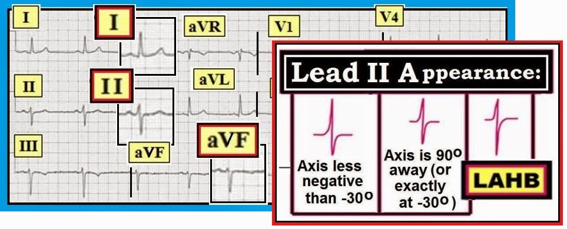
TRẢ LỜI cho Hình-15: Như đã nhấn mạnh trong Hình-13 và Hình-14 — chỉ cần liếc qua chuyển đạo II là đủ để khẳng định có LAHB trong Hình-15:
- Chuyển đạo II — chủ yếu âm trong Hình-15. Do đó — trục nằm cách chuyển đạo II hơn 90 độ về phía xa (tức là âm hơn -30 độ) — vậy là LAHB.
===================================
Ứng dụng Lâm sàng của TRỤC:
Chúng tôi kết thúc bài blog hôm nay bằng việc minh họa thêm 2 cách ứng dụng việc xác định trục trên lâm sàng.
===================================
Có RVH không?
Hãy xem điện tâm đồ 12 chuyển đạo trong Hình 16 — ghi ở một người lớn tuổi bị suy tim. Có nhịp xoang. Các khoảng PR, QRS và QT đều bình thường.
- Trục có bình thường không? Nếu không — Vì sao?
- Về lâm sàng — Việc xác định trục giúp gì cho việc diễn giải của chúng ta?

TRẢ LỜI cho Hình-16: Như đã nói — nhịp là nhịp xoang và mọi khoảng đều bình thường. Ngoài ra — có lớn ít nhất 3 buồng tim vì: i) Sóng P cao, nhọn và đỉnh sắc ở chuyển đạo II = RAA (bất thường nhĩ phải – Right Atrial Abnormality); ii) Thành phần âm sâu của sóng P ở chuyển đạo V1 = LAA (bất thường nhĩ trái – Left Atrial Abnormality); và, iii) Dễ dàng thỏa mãn tiêu chuẩn điện thế của LVH. Sóng ST-T phù hợp với thiếu máu cục bộ và/hoặc “tăng gánh” (Xem ECG Blog #73, Blog #75 và Blog #77 của chúng tôi để ôn lại tiêu chuẩn LVH; RAA/LAA; và RVH).
- Có RAD (trục lệch phải – Right Axis Deviation) rõ rệt — được xác định dựa vào phức bộ QRS dương ở chuyển đạo aVF, đi kèm với QRS chủ yếu âm ở chuyển đạo I.
- Trong bối cảnh một bệnh nhân lớn tuổi bị suy tim và có lớn ít nhất 3 buồng tim trên điện tâm đồ — dấu hiệu RAD rõ rệt + RAA gần như chắc chắn cho thấy cũng có RVH (phì đại thất phải – Right Ventricular Hypertrophy). Các thay đổi ST-T ở các chuyển đạo thành dưới thực ra có thể phản ánh “tăng gánh” thất phải do RVH.
- Tiền sử suy tim kèm bằng chứng lớn nhiều buồng tim (trong ca này là cả 4 buồng tim) trên điện tâm đồ — hầu như đủ để chẩn đoán một bệnh cơ tim.
Có phải VT không?
Một ứng dụng ít được chú ý của việc xác định trục trên mặt phẳng trán là trong chẩn đoán phân biệt một WCT (nhịp nhanh QRS rộng – Wide-Complex Tachycardia) đều. Tôi trình bày chi tiết chủ đề phức tạp này ở nơi khác (Xem ECG Blog #196) — nhưng ở đây chỉ nêu “câu trả lời ngắn gọn” trong các điểm lâm sàng dưới đây:
- Luôn giả định một nhịp WCT đều không có sóng P bình thường là VT cho đến khi chứng minh được điều ngược lại. Bạn sẽ đúng >80% số trường hợp (>90% số trường hợp nếu bệnh nhân ở tuổi trung niên trở lên và có bệnh tim nền).
- Điều trị bệnh nhân như thể nhịp là VT cho đến khi chứng minh được điều ngược lại.
- Trong vô số tiêu chuẩn chẩn đoán được nêu ra để phân biệt SVT kèm hoặc blốc nhánh hoặc dẫn truyền lệch hướng với VT — tôi nhận thấy 3 Quy tắc Đơn giản của mình giúp quá trình chẩn đoán dễ dàng hơn rất nhiều. Khả năng là VT vượt quá 90-95% — NẾU i) Phức bộ QRS giãn rộng rõ rệt và không có hình dạng rõ ràng; và/hoặc ii) Phức bộ QRS hoàn toàn âm (hoặc gần như hoàn toàn âm) ở chuyển đạo bên trái V6; và/hoặc, iii) Có trục lệch cực độ trên mặt phẳng trán (mà tôi định nghĩa là một trục trong đó phức bộ QRS hoàn toàn âm ở hoặc chuyển đạo I hoặc chuyển đạo aVF).
C
ÂU HỎI:
Trong 3 “Quy tắc Đơn giản” nêu trên, những quy tắc nào hiện diện trên điện tâm đồ ở Hình-17? Giả sử bệnh nhân là người lớn tuổi có tiền sử bệnh tim — và huyết động của bệnh nhân ổn định mặc dù có nhịp này.

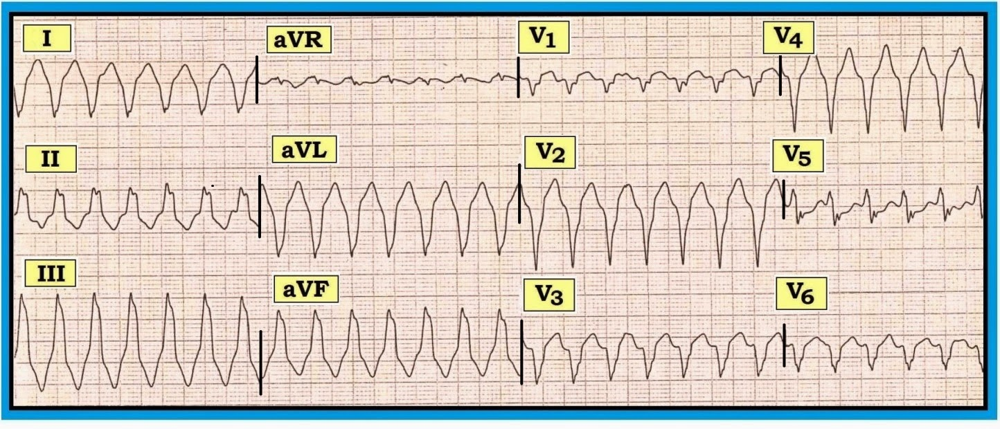
TRẢ LỜI cho Hình-17: Cần nhận ra rằng xác suất thống kê để WCT đều này là VT ở bệnh nhân lớn tuổi có bệnh tim này đã vượt quá 90% — ngay cả trước khi xem kỹ bản ghi này! Dù vậy — chúng ta có thể nâng khả năng VT lên gần như 100% khi nhận thấy cả 3 Quy tắc Đơn giản nêu trên đều hiện diện!
- QRS giãn rộng rõ rệt (tới ít nhất 0.16 giây ở một số chuyển đạo) — và có hình dạng “xấu xí” (do đó ít có khả năng phản ánh blốc nhánh hay dẫn truyền lệch hướng hơn nhiều).
- Phức bộ QRS ở chuyển đạo V6 âm hoàn toàn — tự điều này đã làm khả năng VT lên gần 100%!
- Có trục lệch cực độ (tức là QRS hoàn toàn âm ở chuyển đạo I) — điều này cũng gần như tự nó làm khả năng VT lên gần 100%!
===================================
Các bài ECG Blog liên quan đến bài hôm nay:
- ECG Blog #5 — Biến thể sóng T thiếu niên (kèm trục lệch).
- ECG Blog #29 — Nam 50 tuổi bị blốc phân nhánh.
- ECG Blog #30 — Nữ 72 tuổi bị blốc phân nhánh.
- ECG Blog #77 — Trục lệch ở bệnh nhân suy tim.
- ECG Blog #122 — Một trẻ em bị blốc hai phân nhánh.
- ECG Blog #135 — Trục lệch kèm nhịp WCT.
- ECG Blog #140 — Một kiểu dẫn truyền lệch hướng dạng blốc hai phân nhánh.
- ECG Blog #165 — Nhồi máu thành dưới và/hoặc blốc phân nhánh?

PHẦN BỔ SUNG (ngày 6 tháng 4 năm 2021):
Dành cho những ai muốn biết thêm về LÝ DO liên quan đến cơ chế hình thành LAHB và LPHB — tôi đã trình bày lại một cách lý giải sinh lý bệnh đơn giản hóa về 2 loại blốc phân nhánh này (phỏng theo Grauer K, Curry RW: Clinical Electrocardiography [2nd Edition], Blackwell, 1992).

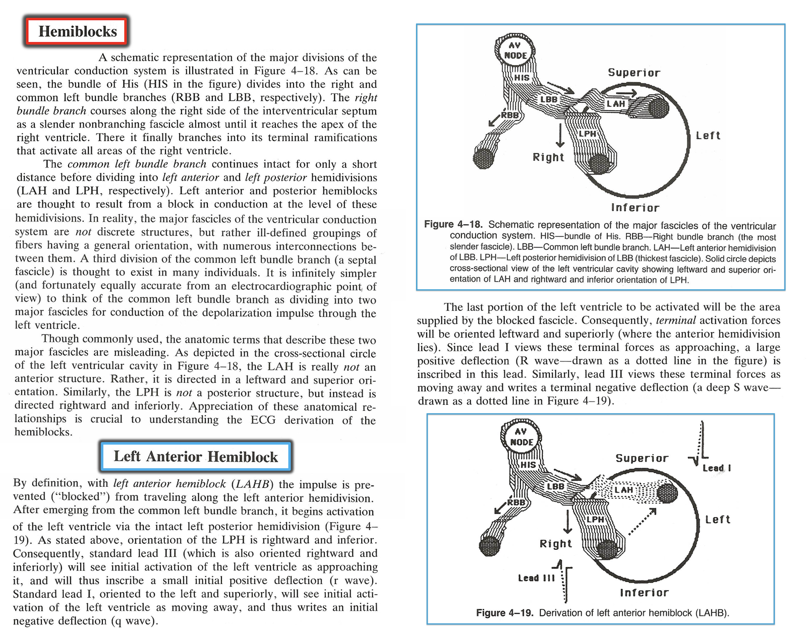

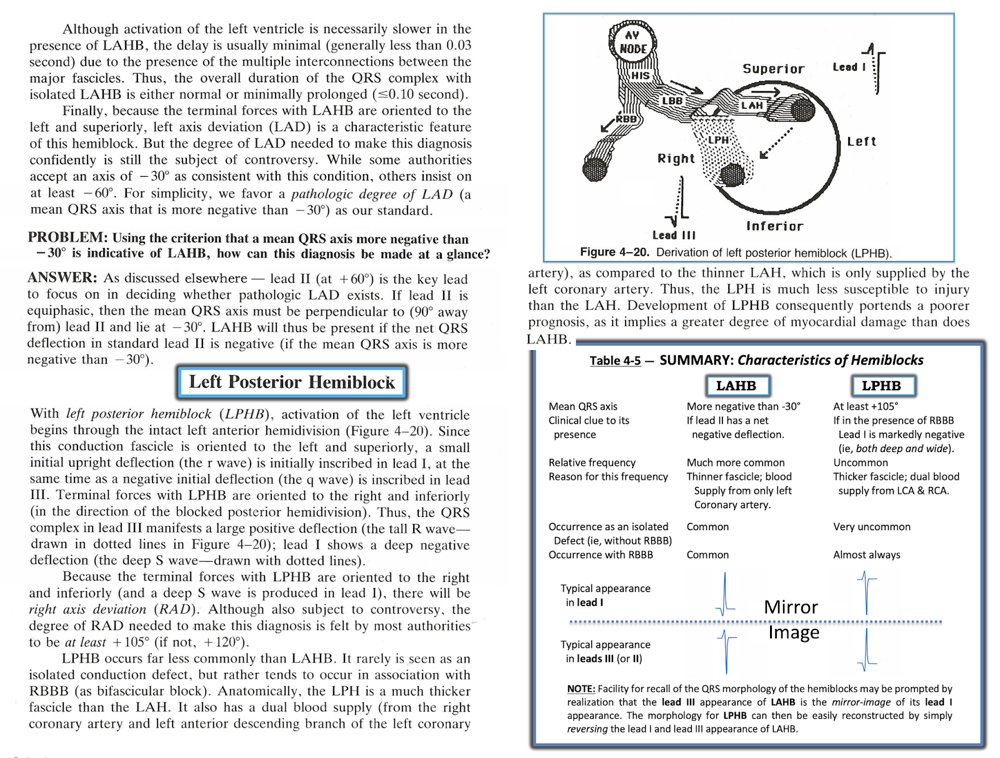